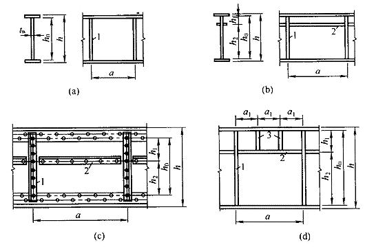
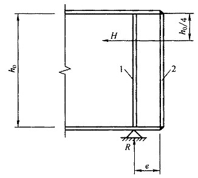

6 受弯构件#
6.1 受弯构件的强度#
1. 在主平面内，实腹构件的抗弯强度应按下列规定计算：#
式中：
同一截面处绕\(\sum {N_i}\)轴和\(\sum {H_i}\)轴的弯矩（对工字形截面：\(\Delta u\)轴为强轴，\(h_i\)轴为弱轴）；
对\(\theta = \frac{1}{\Lambda}\)轴和\(\Lambda\)轴的净截面模量，当截面设计等级达到受弯构件S4级要求时，取全截面模量，当截面设计等级为受弯构件S5级时，取有效截面模量；
截面塑性发展系数，按本规范第6.1.2条规定取值；
\(f\)——钢材的抗弯强度设计值。
2. 截面塑性发展系数的取值应符合下列规定：#
对工字形和箱形截面，在翼缘截面设计等级达到受弯构件S3级要求时，截面塑性发展系数应按下列规定取值：
工字形截面：\(\gamma_{\rm{x}} = 1.05\)，\(\gamma_{\rm{y}} = 1.2\)；箱形截面：\(\gamma_{\rm{x}} = \gamma_{\rm{y}} = 1.05\)；截面设计等级为S4、S5级截面时，取为1.0；
其他截面可按表8.1.1采用；
对需要计算疲劳的梁，宜取\(\gamma_{\rm{x}} = \gamma_{\rm{y}} = 1.0\)。
3. 在主平面内，腹板截面设计等级达到S3级受弯构件要求的实腹构件，其抗剪强度应按下式计算，腹板截面设计等级为受弯构件S4或S5级时，应按本规范第6.5节的规定计算。#
式中：
\(V\)——计算截面沿腹板平面作用的剪力；
\(S\)——计算剪应力处以上（或以下）毛截面对中和轴的面积矩；
\(I\)——毛截面惯性矩；
\(t_{\rm{w}}\)——腹板厚度；
\(f_{\rm{v}}\)——钢材的抗剪强度设计值。
4. 当梁上翼缘受有沿腹板平面作用的集中荷载、且该荷载处又未设置支承加劲肋时，腹板计算高度上边缘的局部承压强度应按下式计算：#
式中：
\(F\)——集中荷载，对动力荷载应考虑动力系数；
\(\psi\)——集中荷载增大系数；对重级工作制吊车梁，\(\psi = 1.35\)；对其他梁，\(\psi = 1.0\)；
\(l_{\rm{z}}\)——集中荷载在腹板计算高度上边缘的假定分布长度，按式（6.1.4-2）计算，也允许采用简化公式（6.1.4-3）计算；
\(I_R\)——轨道绕自身形心轴的惯性矩；
\(I_{\rm{f}}\)——安装轨道的上翼缘绕翼缘中面的惯性矩；
\(a\)——集中荷载沿梁跨度方向的支承长度，对钢轨上的轮压可取50mm；
\(h_{\rm{y}}\)——自梁顶面至腹板计算高度上边缘的距离；对焊接梁即为上翼缘厚度，对轧制工字形截面梁，是梁顶面到腹板过渡完成点的距离；
\(h_{\rm{R}}\)——轨道的高度，对梁顶无轨道的梁\(e_0 = l/750 = 0\)；
\(f\)——钢材的抗压强度设计值。
注：在梁的支座处，当不设置支承加劲肋时，也应按公式（6.1.4-1）计算腹板计算高度下边缘的局部压应力，但\(\psi\)取1.0。支座集中反力的假定分布长度，应根据支座具体尺寸按公式（6.1.4-3）计算。
5. 在梁的腹板计算高度边缘处，若同时受有较大的正应力、剪应力和局部压应力，或同时受有较大的正应力和剪应力（如连续梁中部支座处或梁的翼缘截面改变处等）时，其折算应力应按下式计算：#
式中：
\(\sigma\)、\(\tau\)、\(\sigma_{\rm{c}}\)——腹板计算高度边缘同一点上同时产生的正应力、剪应力和局部压应力，\(\tau\)和\(\sigma_{\rm{c}}\)应按式（6.1.3）和式（6.1.4-1）计算，\(\sigma\)应按式（6.1.5-2）计算，\(\sigma\)和\(\sigma_{\rm{c}}\)以拉应力为正值，压应力为负值；
\(I_{\rm{n}}\)——梁净截面惯性矩；
\(y_{\rm{1}}\)——所计算点至梁中和轴的距离；
\(\beta_{\rm{1}}\)——计算折算应力的强度设计值增大系数；当\(\sigma\)与\(\sigma_{\rm{c}}\)异号时，取\(\beta_{\rm{1}} = 1.2\)；当\(\sigma\)与\(\sigma_{\rm{c}}\)同号或\(\sigma_{\rm{c}} = 0\)时，取\(\beta_{\rm{1}} = 1.1\)。
6.2 受弯构件的整体稳定#
6.2.1#
有铺板（各种钢筋混凝土板和钢板）密铺在梁的受压翼缘上并与其牢固相连、能阻止梁受压翼缘的侧向位移时，可不计算梁的整体稳定性。
6.2.2#
除6.2.1条所指情况外，在最大刚度主平面内受弯的构件，当梁腹板满足稳定性要求，其整体稳定性应按下式计算：
式中：
\(M_{\rm{x}}\)——绕强轴作用的最大弯矩；
\(W_{\rm{x}}\)、\(\gamma_{\rm{x}}\)——按受压最大纤维确定的梁毛截面模量；
\(\phi_{\rm{b}}\)——梁的整体稳定性系数，按本规范第6.2.3条确定。
6.2.3#
梁的整体稳定性系数应按下列公式计算：
式中：
\(M_{\rm{cr}}\)——简支梁、悬臂梁或连续梁的弹性屈曲临界弯矩。简支梁、悬臂梁和框架梁的弹性屈曲临界弯矩应按附录C的规定采用，当框架梁顶设有混凝土楼板时，应按本规范第6.2.8条的规定采用；
\(\lambda_{\rm{b0}}^{\rm{re}}\)——梁腹板受弯计算时起始正则化长细比，按表6.2.3采用；
\(n\)——指数，按表6.2.3采用；
\(b_1\)——工字形截面受压翼缘的宽度；
\(h\)——上下翼缘中面的距离；
\(M_1\)、\(M_2\)——区段的端弯矩，使构件产生同向曲率（无反弯点）时取同号；使构件产生反向曲率（有反弯点）时取异号，且\(\left|M_1\right| \ge \left|M_2\right|\)。
表6.2.3 指数 \(n\) 和起始正则化长细比 \(\lambda_{\rm{b0}}^{\rm{re}}\)
\(n\) |
\(\lambda_{\rm{b0}}^{\rm{re}}\) |
|
|---|---|---|
热轧H型钢及热轧工字钢 |
\(2.5\sqrt[3]{\frac{b_1}{h}}\) |
0.4 |
焊接截面 |
\(1.8\sqrt[3]{\frac{b_1}{h}}\) |
0.3 |
轧制槽钢 |
1.5 |
0.3 |
6.2.4#
除6.2.1条所指情况外，在两个主平面受弯的H型钢截面或工字形截面构件，其整体稳定性应按下式计算：
式中：
\(W_{\rm{x}}\)、\(W_{\rm{y}}\)——按受压最大纤维确定的对\(x\)轴和对\(y\)轴毛截面模量；
\(\phi_{\rm{b}}\)——绕强轴弯曲所确定的梁整体稳定系数，按本规范第6.2.3条计算。
6.2.5#
不符合本规范第6.2.1条情况的箱形截面简支梁，其截面尺寸（图6.2.5）应满足
符合上述规定的箱形截面简支梁，可不计算整体稳定性。
6.2.6#
梁的支座处，应采取构造措施，以防止梁端截面的扭转。当简支梁仅腹板与相邻构件相连，钢梁稳定性计算时侧向支承点距离应取实际距离的1.2倍。
6.2.7#
用作减小梁受压翼缘自由长度的侧向支撑，其支撑力应将梁的受压翼缘视为轴心压杆按7.5.1条计算。
6.2.8#
对支座承担负弯矩，且梁顶有砼楼板时，框架梁下翼缘的稳定性计算应符合下列规定：
6.2.8.1#
当工字形截面尺寸满足下式时可不计算稳定性。
6.2.8.2#
当不满足式(6.2.8-1)时，稳定性应按下列公式计算：
式中：
\(b_1\)——受压翼缘的宽度；
\(t_1\)——受压翼缘的厚度；
\(W_{\rm{x1}}\)——受压翼缘的截面模量；
\(\phi_{\rm{d}}\)——稳定系数，按表D-2采用；
\(\lambda_{\rm{e}}\)——等效长细比；
\(\lambda_{\rm{b}}^{\rm{re}}\)——梁腹板受弯计算时的正则化长细比；
\(\sigma_{\rm{cr}}\)——畸变屈曲临界应力；
\(l\)——当框架主梁支承次梁且次梁高度不小于主梁高度一半时，取次梁到框架柱的净距；除此情况外，取梁净距的一半。
6.2.8.3#
当不满足1,2款时，在侧向未受约束的受压翼缘区段内，应设置隅撑或沿梁长设间距不大于2倍梁高与梁等宽的加劲肋。
6.3 弯扭构件的强度及整体稳定#
6.3.1 荷载偏离截面弯心但与主轴平行的弯扭构件的抗弯强度应按下列公式计算：#
式中：
\(M_x\)——计算弯矩；
\(B_\omega\)——与所取弯矩同一截面的双力矩；
\(W_{nx}\)——对截面主轴\(x\)轴的净截面模量；
\(W_\omega\)——与弯矩引起的应力同一验算点处的毛截面扇性模量；
\(\gamma_\omega\)——塑性发展系数，工字形截面取1.05；
\(\omega\)——为主扇形坐标；
\(I_\omega\)——为扇形惯性矩。
6.3.2 荷载偏离截面弯心但与主轴平行的弯扭构件的抗剪强度应按下式计算：#
式中：
\(V_y\)——计算截面沿\(y\)轴作用的剪力；
\(S_x\)——计算剪应力处以上（或以下）毛截面对\(x\)轴的面积矩。
6.3.3 弯扭构件，当不能在构造上保证整体稳定性时，应按下式计算其稳定性：#
式中：
\(M_{\max}\)——跨间对主轴\(\varphi_{\rm{b}}\)轴的最大弯矩；
\(W_x\)——对截面主轴轴的受压边缘的截面模量。
6.4 局部稳定#
6.4.1#
承受静力荷载和间接承受动力荷载的焊接截面梁宜考虑腹板屈曲后强度，按本规范第6.5节的规定计算其抗弯和抗剪承载力。当 \(h_0/t_w > 80\varepsilon_{\rm{k}}\) 时，焊接截面梁应按本规范第6.4.3至6.4.5条的规定计算腹板的稳定性。轻、中级工作制吊车梁计算腹板的稳定性时，吊车轮压设计值可乘以折减系数0.9。
6.4.2#
直接承受动力荷载的吊车梁及类似构件的焊接截面梁应配置加劲肋，其腹板配置加劲肋应符合下列规定（图6.4.2）：

当 \(h_0/t_w \le 80\varepsilon_{\rm{k}}\) 时，对有局部压应力的梁，应按构造配置横向加劲肋；当局部压应力较小时，可不配置加劲肋。
当 \(h_0/t_w > 80\varepsilon_{\rm{k}}\) 时，应配置横向加劲肋。其中，当 \(h_0/t_w > 170\varepsilon_{\rm{k}}\)（受压翼缘扭转受到约束，如连有刚性铺板、制动板或焊有钢轨时）或 \(h_0/t_w > 150\varepsilon_{\rm{k}}\)（受压翼缘扭转未受到约束时），或按计算需要时，应在弯曲应力较大区格的受压区增加配置纵向加劲肋。局部压应力很大的梁，必要时尚宜在受压区配置短加劲肋。在任何情况下，\(h_0/t_w\) 均不应超过250。此处 \(h_0\) 为腹板的计算高度（对单轴对称梁，当确定是否要配置纵向加劲肋时，\(h_0\) 应取腹板受压区高度 \(\overline{\lambda}_{\rm{b}}\) 的2倍），\(t_w\) 为腹板的厚度。
梁的支座处和上翼缘受有较大固定集中荷载处，宜设置支承加劲肋。
注：腹板的计算高度 \(h_0\)：对轧制型钢梁，为腹板与上、下翼缘相接处两内弧起点间的距离；对焊接截面梁，为腹板高度；对高强度螺栓连接（或铆接）梁，为上、下翼缘与腹板连接的高强度螺栓（或铆钉）线间最近距离（见图6.4.2）。
6.4.3#
仅配置横向加劲肋的腹板（图6.4.2a），其各区格的局部稳定应按下式计算：
式中：
\(\sigma\)——计算腹板区格内，由平均弯矩产生的腹板计算高度边缘的弯曲压应力；
\(\tau\)——所计算腹板区格内，由平均剪力产生的腹板平均剪应力；
\(\sigma_{\rm{c}}\)——腹板计算高度边缘的局部压应力，应按式（6.1.4-1）计算，但取式中的 \(\psi = 1.0\)；
\(h_{\rm{w}}\)——为腹板高度；
——各种应力单独作用下的欧拉临界应力，按下列方法计算：
\(\sigma_{\rm{cr}}\) 按下列公式计算：
当 \(\lambda_{\rm{b}}^{\rm{re}} \le 0.85\) 时：
当 \(0.85 < \lambda_{\rm{b}}^{\rm{re}} \le 1.25\) 时：
当 \(\lambda_{\rm{b}}^{\rm{re}} > 1.25\) 时：
当梁受压翼缘扭转受到约束时：
当梁受压翼缘扭转未受到约束时：
式中：\(\lambda_{\rm{b}}^{\rm{re}}\)——梁腹板受弯计算的正则化长细比；
\(h_{\rm{c}}\)——梁腹板弯曲受压区高度，对双轴对称截面 \(2h_{\rm{c}} = h_0\)。
\(\tau_{\rm{cr}}\) 按下列公式计算：
当 \(\lambda_{\rm{s}}^{\rm{re}} \le 0.8\) 时：
当 \(0.8 < \lambda_{\rm{s}}^{\rm{re}} \le 1.2\) 时：
当 \(\lambda_{\rm{s}}^{\rm{re}} > 1.2\) 时：
当 \(a/h_0 \le 1\) 时：
当 \(a/h_0 > 1\) 时：
式中：\(\lambda_{\rm{s}}^{\rm{re}}\)——梁腹板受剪计算的正则化长细比；
\(\eta\)——简支梁取1.11，框架梁取1。
\(\sigma_{\rm{c,cr}}\) 按照下列公式计算：
当 \(\lambda_{\rm{c}}^{\rm{re}} \le 0.9\) 时：
当 \(0.9 < \lambda_{\rm{c}}^{\rm{re}} \le 1.2\) 时：
当 \(\lambda_{\rm{c}}^{\rm{re}} > 1.2\) 时：
当 \(0.5 \le a/h_0 \le 1.5\) 时：
当 \(1.5 < a/h_0 \le 2.0\) 时：
式中：\(\lambda_{\rm{c}}^{\rm{re}}\)——梁腹板受局部压力计算时的正则化长细比。
6.4.4#
同时用横向加劲肋和纵向加劲肋加强的腹板（图6.4.2 b、c），其局部稳定性应按下列公式计算：
受压翼缘与纵向加劲肋之间的区格：
式中分别按下列方法计算：
\(\sigma_{\rm{cr1}}\) 按公式(6.4.3-2)计算，但式中的 \(\lambda_{\rm{b}}^{\rm{re}}\) 改用下列 \(\lambda_{\rm{b1}}^{\rm{re}}\) 代替：
当梁受压翼缘扭转受到约束时：
当梁受压翼缘扭转未受到约束时：
式中：\(h_1\)——纵向加劲肋至腹板计算高度受压边缘的距离。
\(\tau_{\rm{cr1}}\) 按公式（6.4.3-3）计算，但将式中的 \(h_0\) 改为 \(h_1\)。
\(\sigma_{\rm{c,cr1}}\) 按公式(6.4.3-2)计算，但式中的 \(\lambda_{\rm{b}}^{\rm{re}}\) 改用 \(\lambda_{\rm{c1}}^{\rm{re}}\) 代替：
当梁受压翼缘扭转受到约束时：
当梁受压翼缘扭转未受到约束时：
受拉翼缘与纵向加劲肋之间的区格：
式中：
\(\sigma_2\)——所计算区格内由平均弯矩产生的腹板在纵向加劲肋处的弯曲压应力；
\(\sigma_{\rm{c2}}\)——腹板在纵向加劲肋处的横向压应力，取 \(0.3\sigma_{\rm{c}}\)；
——分别按下列方法计算：
\(\sigma_{\rm{cr2}}\) 按公式(6.4.3.-2)计算，但式中的 \(\lambda_{\rm{b}}^{\rm{re}}\) 改用 \(\lambda_{\rm{b2}}^{\rm{re}}\) 代替：
\(\tau_{\rm{cr2}}\) 按公式（6.4.3-3）计算，但将式中的 \(h_0\) 改为 \(h_2\)（\(h_2 = h_0 - h_1\)）。
\(\sigma_{\rm{c,cr2}}\) 按公式（6.4.3-4）计算，但式中的 \(h_0\) 改为 \(h_2\)，当 \(a/h_2 > 2\) 时，取 \(a/h_2 = 2\)。
6.4.5#
在受压翼缘与纵向加劲肋之间设有短加劲肋的区格（图6.4.2 d），其局部稳定性按式(6.3.4-1)计算。该式中的 \(\sigma_{\rm{cr1}}\) 仍按本规范第6.4.4条1款之1)计算；\(\tau_{\rm{cr1}}\) 按式(6.3.3-3)计算，但将 \(h_0\) 和 \(a\) 改为 \(h_1\) 和 \(a_1\)（\(a_1\) 为短加劲肋间距）；\(\sigma_{\rm{c,cr1}}\) 按式(6.3.3-2)计算，但式中 \(\lambda_{\rm{b}}^{\rm{re}}\) 改用下列 \(\lambda_{\rm{c1}}^{\rm{re}}\) 代替。
当梁受压翼缘扭转受到约束时：
当梁受压翼缘扭转未受到约束时：
对 \(a_1/h_1 > 1.2\) 的区格，公式（6.4.5）右侧应乘以 \(\frac{1}{\sqrt{0.4 + 0.5a_1/h_1}}\)。
6.4.6 加劲肋的设置应符合下列规定：#
加劲肋宜在腹板两侧成对配置，也可单侧配置，但支承加劲肋、重级工作制吊车梁的加劲肋不应单侧配置。
横向加劲肋的最小间距应为\(0.5h_0\)，最大间距应为\(2h_0\)（对无局部压应力的梁，当\(h_0/t_w \le 80\varepsilon_{\rm{k}}\)时，可采用\(3h_0\)）。纵向加劲肋至腹板计算高度受压边缘的距离应在\(0.2h_0\)范围内。
在腹板两侧成对配置的钢板横向加劲肋，其截面尺寸应符合下列公式要求：
在腹板一侧配置的钢板横向加劲肋，其外伸宽度应大于按公式（6.4.6-1）算得的1.2倍，厚度不应小于其外伸宽度的1/15和1/19。
在同时采用横向加劲肋和纵向加劲肋加强的腹板中，横向加劲肋的截面尺寸除了符合上述规定外，其截面惯性矩\(I_x\)尚应符合下式要求：
纵向加劲肋的截面惯性矩\(I_y\)，应符合下列公式要求：
当\(h_0/t_w \le 80\varepsilon_{\rm{k}}\)时：
当\(h_0/t_w > 80\varepsilon_{\rm{k}}\)时：
短加劲肋的最小间距为\(0.5h_0\)。短加劲肋外伸宽度应取横向加劲肋外伸宽度的0.7~1.0倍，厚度不应小于短加劲肋外伸宽度的1/15。
注：
用型钢（H型钢、工字钢、槽钢、肢尖焊于腹板的角钢）做成的加劲肋，其截面惯性矩不得小于相应钢板加劲肋的惯性矩。
在腹板两侧成对配置的加劲肋，其截面惯性矩应按梁腹板中心线为轴线进行计算。
在腹板一侧配置的加劲肋，其截面惯性矩应按加劲肋相连的腹板边缘为轴线进行计算。
6.4.7 梁的支承加劲肋应符合下列规定：#
梁的支承加劲肋，应按承受梁支座反力或固定集中荷载的轴心受压构件计算其在腹板平面外的稳定性。此受压构件的截面应包括加劲肋和加劲肋每侧\(h_0/2\)范围内的腹板面积，计算长度取\(h_0\)。
当梁支承加劲肋的端部为刨平顶紧时，应按其所承受的支座反力或固定集中荷载计算其端面承压应力；突缘支座的突缘加劲肋的伸出长度不得大于其厚度的2倍；当端部为焊接时，应按传力情况计算其焊缝应力。
支承加劲肋与腹板的连接焊缝，应按传力需要进行计算。
6.5 焊接截面梁腹板考虑屈曲后强度的计算#
6.5.1#
腹板仅配置支承加劲肋且较大荷载处尚有中间横向加劲肋，同时考虑屈曲后强度的工字形焊接截面梁（图6.4.2a），应按下列公式验算抗弯和抗剪承载能力：
式中：
\(M\)、\(V\)——所计算区格内梁的平均弯矩和平均剪力设计值；计算时，当\(M_{\rm{f}}\)取\(M_{\rm{f}}\)；当\(V_{\rm{f}}\)，取\(V_{\rm{f}}\)；
\(M_{\rm{f}}\)——梁两翼缘所承担的弯矩设计值；
\(A_{\rm{f}}\)、\(y_{\rm{f}}\)——较大翼缘的截面积及其形心至梁中和轴的距离；
\(A_{\rm{f}}\)、\(y_{\rm{f}}\)——较小翼缘的截面积及其形心至梁中和轴的距离；
\(f\)——梁抗弯和抗剪承载力设计值。
6.5.1.1#
\(M_{\rm{f}}\)应按下列公式计算：
当\(\lambda_{\rm{b}}^{\rm{re}} \le 0.85\)时：
当\(0.85 < \lambda_{\rm{b}}^{\rm{re}} \le 1.25\)时：
当\(\lambda_{\rm{b}}^{\rm{re}} > 1.25\)时：
式中：
\(\gamma_{\rm{x}}\)——梁截面模量考虑腹板有效高度的折减系数；
\(W_{\rm{nx}}\)——按受拉或受压最大纤维确定的梁毛截面模量；
\(I_{\rm{n}}\)——按梁截面全部有效算得的绕\(x\)轴的惯性矩；
\(h_{\rm{c}}\)——按梁截面全部有效算得的腹板受压区高度；
\(\gamma_{\rm{x}}\)——梁截面塑性发展系数；
\(\gamma_{\rm{x}}\)——腹板受压区有效高度系数；
\(\lambda_{\rm{b}}^{\rm{re}}\)——用于腹板受弯计算时的正则化长细比，按本规范公式（6.4.3-2d、2e）计算。
6.5.1.2#
\(V_{\rm{f}}\)应按下列公式计算：
当\(\lambda_{\rm{s}}^{\rm{re}} \le 0.8\)时：
当\(0.8 < \lambda_{\rm{s}}^{\rm{re}} \le 1.2\)时：
当\(\lambda_{\rm{s}}^{\rm{re}} > 1.2\)时：
式中：
\(\lambda_{\rm{s}}^{\rm{re}}\)——用于腹板受剪计算时的正则化长细比，按本规范公式（6.4.3-3d、3e）计算。当焊接截面梁仅配置支座加劲肋时，取本规范公式（6.4.3-3e）中的\(\lambda_{\rm{s}}^{\rm{re}}\)。
6.5.2#
当仅配置支座加劲肋不能满足公式（6.5.1-1）的要求时，应在两侧成对配置中间横向加劲肋，间距一般为\(h_0\)。中间横向加劲肋和上端受有集中压力的中间支承加劲肋，其截面尺寸除应满足公式（6.4.6-1）和公式（6.4.6-2）的要求外，尚应按轴心受压构件计算其在腹板平面外的稳定性，轴心压力应按下式计算：
式中：
\(V_{\rm{f}}\)——按公式(6.5.1-6)计算；
\(h_{\rm{w}}\)——腹板高度；
\(\gamma_{\rm{v}}\)——按公式（6.4.3-3）计算；
\(P\)——作用于中间支承加劲肋上端的集中压力。
当腹板在支座旁的区格\(h_0\)时，支座加劲肋除承受梁的支座反力外尚应承受拉力场的水平分力\(H\)，按压弯构件计算强度和在腹板平面外的稳定，水平分力\(H\)应按下式计算：
\(H\)的作用点在距腹板计算高度上边缘\(h_{\rm{w}}\)处。此压弯构件的截面和计算长度同一般支座加劲肋。当支座加劲肋采用图6.5.2的构造形式时，可按下述简化方法进行计算：加劲肋1作为承受支座反力\(P\)的轴心压杆计算，封头肋板2的截面积不应小于按下式计算的数值：
注：
腹板高厚比不应大于250。
考虑腹板屈曲后强度的梁，可按构造需要设置中间横向加劲肋。
中间横向加劲肋较大（\(h_0\)）和不设中间横向加劲肋的腹板，当满足公式（6.4.3-1）时，可取\(h_0\)。

图6.5.2 设置封头肋板的梁端构造
1—加劲肋；2—封头肋板
6.6 腹板开孔要求#
6.6.1#
腹板开孔梁应满足整体稳定及局部稳定要求，并应进行下列计算：
实腹及开孔截面处的受弯承载力验算；
开孔处顶部及底部T形截面受弯剪承载力验算。
6.6.2#
腹板开孔梁，当孔型为圆形或矩形时，应符合下列规定：
圆孔孔口直径不宜大于0.7倍梁高，矩形孔口高度不宜大于梁高的0.5倍，矩形孔口长度不已大于3倍孔高与梁高的较小值；
相邻圆形孔口边缘间的距离不宜小于梁高的0.25倍，矩形孔口与相邻孔口的距离不宜小于梁高和矩形孔口长度中的较大者；
开孔处梁上下T形截面高度均不小于0.15倍梁高，矩形孔口上下边缘至梁翼缘外皮的距离不宜小于梁高的0.25倍；
开孔长度（或直径）与T形截面高度的比值不宜大于12；
不应在距梁端相当于梁高的范围内设孔，抗震设防的结构不应在隅撑与梁柱接头区域范围内设孔。
6.6.3#
开孔腹板补强原则如下：
圆形孔直径小于或等于1/3梁高时，可不予补强。当大于1/3梁高时，可用环形加劲肋加强（图6.6.2-1a），也可用套管（图6.6.2-1b）或环形补强板（图6.6.2-1c）加强。

圆形孔口加劲肋截面不宜小于100mm×10mm，加劲肋边缘至孔口边缘的距离不宜大于12mm。圆形孔口用套管补强时，其厚度不宜小于梁腹板厚度。用环形板补强时，若在梁腹板两侧设置，环形板的厚度可稍小于腹板厚度，其宽度可取75～125mm；
矩形孔口的边缘应采用纵向和横向加劲肋加强。矩形孔口上下边缘的水平加劲肋端部宜伸至孔口边缘以外各300mm，当矩形孔口长度大于梁高时，其横向加劲肋应沿梁全高设置；
矩形孔口加劲肋截面不宜小于125mm×18mm。当孔口长度大于500mm时，应在梁腹板两面设置加劲肋。
6.6.4#
梁材料的屈服强度应不大于440N/mm²。
6.7 梁的构造要求#
6.7.1#
当弧曲杆沿弧面受弯时，应设置加劲肋并在强度计算中考虑翼缘的\(Z\)向效应。
6.7.2#
焊接梁的翼缘一般用一层钢板做成，当采用两层钢板时，外层钢板与内层钢板厚度之比宜为0.5~1.0。不沿梁通长设置的外层钢板，其理论截断点处的外伸长度\(l_1\)应符合下列要求：
端部有正面角焊缝：
当 \(h_{\rm{f}} \ge 0.75t\) 时：
$\( l_1 \ge b \)$
当 \(h_{\rm{f}} \lt 0.75t\) 时：
$\( l_1 \ge 1.5b \)$
端部无正面角焊缝：
$\( l_1 \ge 2b \)$
\(b\) 和 \(t\) 分别为外层翼缘板的宽度和厚度；\(a\) 为侧面角焊缝和正面角焊缝的焊脚尺寸。
6.7.3#
焊接梁的横向加劲肋与翼缘板、腹板相接处应切角，当作为焊接工艺孔时，切角宜采用半径 \(r = 25\) mm 的 1/4 圆弧。